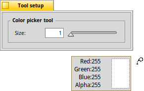

The Color Picker tool - C
|  |
With this tool, you can pick the color under the mouse pointer and use it as new foreground color. If you hold the mouse button and move over the canvas, a small pop-up window appears, announcing the RGBA-values under the cursor. Tip: Holding CTRL will temporarily switch from the currently active tool to this color picker. It'll use the sample configured in the color picker's tool setup. The quick key to choose the color picker tool is C. |
Back: The Selection tool